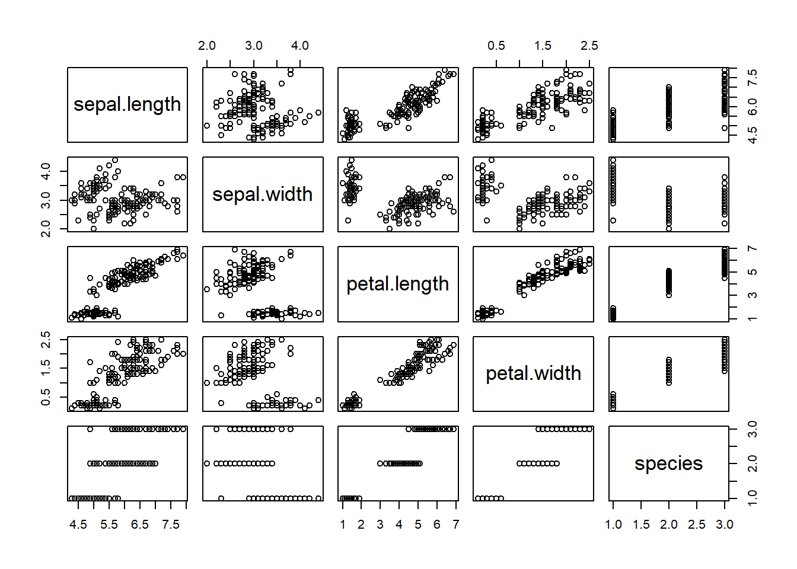
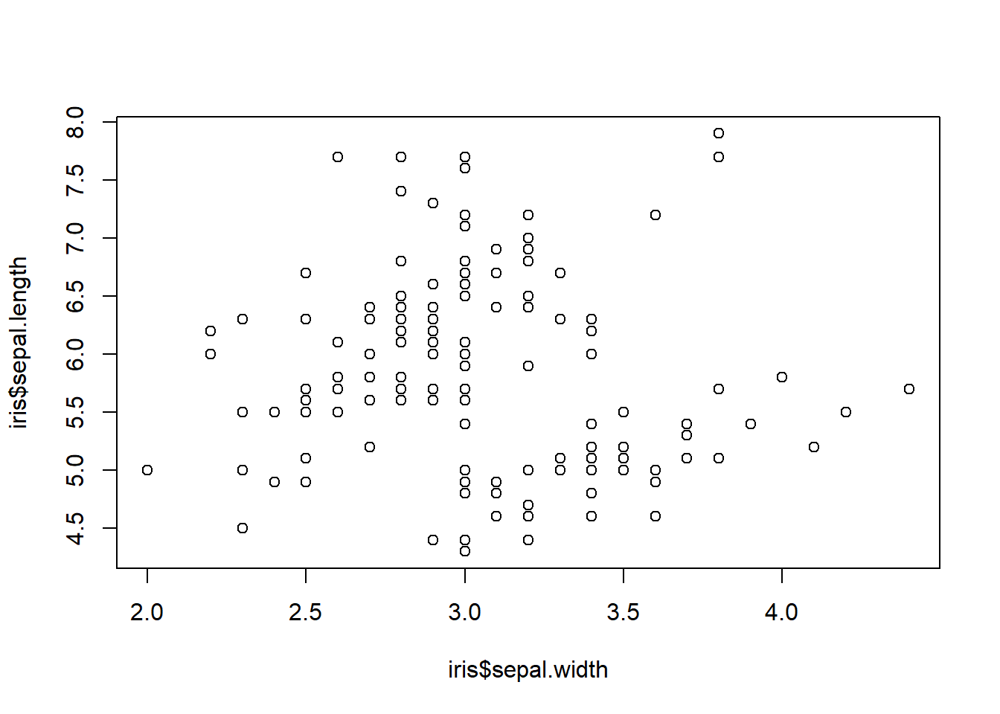
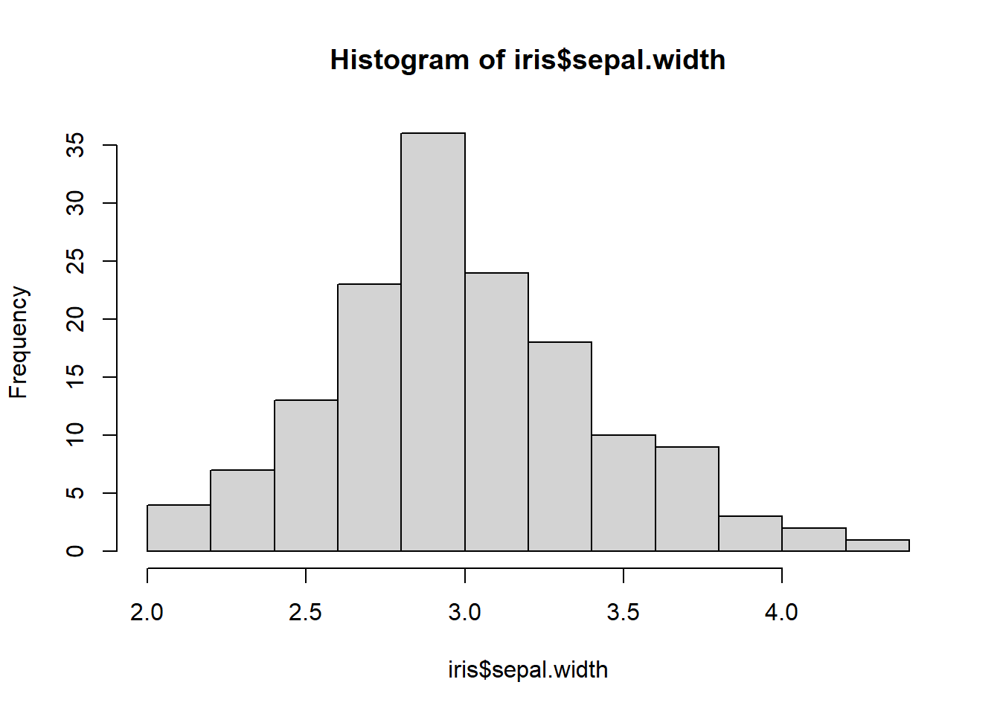

Show the code
# comments appear like this in codeThis exercise is a replication, with some modifcations for learning purposes, of Stephen Malefetsane Moerane’s ‘Learning R on iris’ https://rpubs.com/moeransm/intro-iris
Numerous guides have been written on the exploration of this widely known dataset. Iris, introduced by Ronald Fisher in his 1936 paper The use of multiple measurements in taxonomic problems, contains three plant species (setosa, virginica, versicolor) and four features measured for each sample. These quantify the morphologic variation of the iris flower in its three species, all measurements given in centimeters.
Any comments within our code have to be preceded by the pound sign to notify the compiler to ignore them.
# comments appear like this in code# The datasets package needs to be loaded to access our data
# For a full list of these datasets, type library(help = "datasets")
library(datasets)
data(iris)
summary(iris) Sepal.Length Sepal.Width Petal.Length Petal.Width
Min. :4.300 Min. :2.000 Min. :1.000 Min. :0.100
1st Qu.:5.100 1st Qu.:2.800 1st Qu.:1.600 1st Qu.:0.300
Median :5.800 Median :3.000 Median :4.350 Median :1.300
Mean :5.843 Mean :3.057 Mean :3.758 Mean :1.199
3rd Qu.:6.400 3rd Qu.:3.300 3rd Qu.:5.100 3rd Qu.:1.800
Max. :7.900 Max. :4.400 Max. :6.900 Max. :2.500
Species
setosa :50
versicolor:50
virginica :50
The summary() function gives summary statistics for any dataset.
It can also be called on one variable instead of on the whole dataset. Try summary(iris$Sepal.Length) and compare that with the above summaries.
Alternatively, you may only want to know the column names of your dataset, in which case you can use names(NameOfdataset), which in our case would look like names(iris). Also notice that each coloumn name in the iris dataset has some upper case letters, which might be inconvenient to work with. You can then call the tolower() function on names(iris) to make this change. For those who might prefer upper case column names, the toupper() function will instead, be useful.
Written packages make it easier to work with datasets than regular baseR functions. They have been optimized to be faster and more intuitive than baseR functions, therefore reducing the steepness of the R learning curve. Let’s take a look;
Use install.packages(“dplyr”) in your console to install this package. Note that you must be connected to the internet. If you’ve opened a new R script file, you will need to use the keys CTRL+Enter [PC] or Cmd+Enter [Mac] to run the commands.
names(iris) <- tolower(names(iris))
library(dplyr)Warning: package 'dplyr' was built under R version 4.3.3
Attaching package: 'dplyr'The following objects are masked from 'package:stats':
filter, lagThe following objects are masked from 'package:base':
intersect, setdiff, setequal, union# filter() the data for species virginica
virginica <- filter(iris, species == "virginica")
head(virginica) # This dispalys the first six rows sepal.length sepal.width petal.length petal.width species
1 6.3 3.3 6.0 2.5 virginica
2 5.8 2.7 5.1 1.9 virginica
3 7.1 3.0 5.9 2.1 virginica
4 6.3 2.9 5.6 1.8 virginica
5 6.5 3.0 5.8 2.2 virginica
6 7.6 3.0 6.6 2.1 virginicaNotice that we use the logical double equal sign as in species == “virginica”, and quotations around virginica since this value is of a char (character) data type. The equivalent base command for filter() would be subset(), with all the inner arguments being exactly the same. We can also filter for multiple conditions within our function.
sepalLength6 <- filter(iris, species == "virginica", sepal.length > 6)
tail(sepalLength6) # compare this to head() sepal.length sepal.width petal.length petal.width species
36 6.8 3.2 5.9 2.3 virginica
37 6.7 3.3 5.7 2.5 virginica
38 6.7 3.0 5.2 2.3 virginica
39 6.3 2.5 5.0 1.9 virginica
40 6.5 3.0 5.2 2.0 virginica
41 6.2 3.4 5.4 2.3 virginicaThe syntax for using subset() would be subset(iris, species == “virginica” & sepal.length > 6) and using <- to assign it to a variable of your choice, which in our case is sepalLength6
This function selects data by column name. You can select any number of columns in a few different ways.
# select() the specified columns
selected <- select(iris, sepal.length, sepal.width, petal.length)
# select all columns from sepal.length to petal.length
selected2 <- select(iris, sepal.length:petal.length)
head(selected, 3) sepal.length sepal.width petal.length
1 5.1 3.5 1.4
2 4.9 3.0 1.4
3 4.7 3.2 1.3# selected and selected2 are exactly the same
identical(selected, selected2)[1] TRUECreate new columns using this function
# create a new column that stores logical values for sepal.width greater than half of sepal.length
newCol <- mutate(iris, greater.half = sepal.width > 0.5 * sepal.length)
tail(newCol) sepal.length sepal.width petal.length petal.width species greater.half
145 6.7 3.3 5.7 2.5 virginica FALSE
146 6.7 3.0 5.2 2.3 virginica FALSE
147 6.3 2.5 5.0 1.9 virginica FALSE
148 6.5 3.0 5.2 2.0 virginica FALSE
149 6.2 3.4 5.4 2.3 virginica TRUE
150 5.9 3.0 5.1 1.8 virginica TRUEChallenge: Out of the 150 flowers, find how many satisfy this condition. Hint: use the sum() function on newCol$greater.half
challenge_1_answer <- sum(newCol$greater.half)
print("Answer =")[1] "Answer ="print(challenge_1_answer)[1] 66# arrange()
newCol <- arrange(newCol, petal.width)
head(newCol) sepal.length sepal.width petal.length petal.width species greater.half
1 4.9 3.1 1.5 0.1 setosa TRUE
2 4.8 3.0 1.4 0.1 setosa TRUE
3 4.3 3.0 1.1 0.1 setosa TRUE
4 5.2 4.1 1.5 0.1 setosa TRUE
5 4.9 3.6 1.4 0.1 setosa TRUE
6 5.1 3.5 1.4 0.2 setosa TRUE# The chain operator, or the pipline %>%
# This will first filter, and then arrange our data. Note that here the order in which you call the functions does not matter, but in other cases it might
arr.virg <- newCol %>% filter(species == "virginica") %>%
arrange(sepal.width)
arr.virg[30:35,] # will show us rows 30 through 35 and all columns sepal.length sepal.width petal.length petal.width species greater.half
30 6.8 3.0 5.5 2.1 virginica FALSE
31 6.5 3.0 5.8 2.2 virginica FALSE
32 7.7 3.0 6.1 2.3 virginica FALSE
33 6.7 3.0 5.2 2.3 virginica FALSE
34 6.4 3.1 5.5 1.8 virginica FALSE
35 6.9 3.1 5.4 2.1 virginica FALSE# You can also arrange in descending order using desc() on what you arrange by
# arrange(desc(sepal.width))
# summarise()
summarise(arr.virg, mean.length = mean(sepal.length, na.rm = TRUE)) mean.length
1 6.588This is the mean sepal.length for the virginica species. Challenge2: The standard deviation gives how much individual values vary from the mean. Find the standard deviation of sepal.length using summarise() and sd()
sl_virg <- newCol %>% filter(species == "virginica") %>%
select(sepal.length)
print("Standard deviation in virginica sepal length (cm) is")[1] "Standard deviation in virginica sepal length (cm) is"sd(sl_virg$sepal.length)[1] 0.6358796summarise(sl_virg, standard.deviation = sd(sl_virg$sepal.length)) standard.deviation
1 0.6358796Any powerful analysis will visualize the data to give a better picture (wink wink) of the data. Below is a general plot of the iris dataset:
plot(iris)
If we’re looking to plot specific variables, we can use plot(x,y) where x and y are the variables we’re interested in. hist() is another useful function
# use ?plot to read more about other arguments
#| code-fold: true
#| code-summary: "Show the code"
plot(iris$sepal.width, iris$sepal.length)
Notice that in flowers with greater sepal widths tend to have shorter sepal lengths.
# ?hist will give you details on more arguments
#| code-fold: true
#| code-summary: "Show the code"
hist(iris$sepal.width)
For more resources on R, visit:
http://www.cyclismo.org/tutorial/R/
http://www.tutprialspoint.com/r
http://had.co.nz